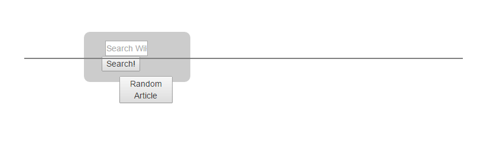

(and a few words)
Over the last year freeCodeCamp, some healthy Googling, and a bit of the ol' reliable learn-by-doing approach have yielded great strides.
A big chunk of my motivation was thinking that tapping away at colorful text editor looked neat from a distance. There was some starry eyed romanticization about being fluent in indecipherable gibberish happening that, forunately, I've learned is a tenacious feeling for me. This stuff is gosh darned cool.
Early work looks like lousy abstract art when the window is resized. Now that we're finishing up the fundamentals of a MEAN stack, hopefully the page you're sitting on now looks is a bit prettier.
This has been by far the most difficult thing I've attempted. By the same token, however, it's been the most rewarding. Fortunately most of the continuous googling is out of the way and this career switch is just getting started.